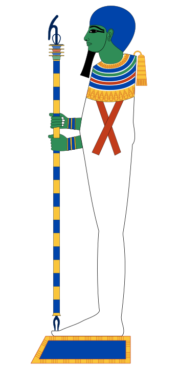

Mênfis, situada na ponta do delta, a cerca de vinte quilômetros ao sul do atual Cairo, foi a capital do Egito desde as primeiras dinastias. Seu grande deus era Ptah, patrono dos artesãos, e o nome de seu templo, Hut-ka-Ptah, “o domínio do ka de Ptah”, tornou-se em grego Aiguptos: é dele que vem a palavra “Egito”.
Capital política, Mênfis quis ser também a capital religiosa do país. Seus sacerdotes elaboraram uma teologia capaz de rivalizar com a de Heliópolis, mais antiga e mais prestigiosa: não negaram a existência de Atum e da Enéade, mas fizeram de Ptah aquele que os havia criado.

Essa teologia chegou até nós graças a um monumento singular. Por volta de 710 a.C., o faraó Shabaka, da XXV dinastia, descobriu no templo de Ptah um velho papiro roído pelos vermes. Para salvar o texto, mandou gravá-lo numa laje de granito negro. Séculos mais tarde, a pedra serviu de mó para moer grãos, e o movimento apagou grande parte de seu centro.
Doada ao Museu Britânico em 1805, quando ninguém ainda sabia ler os hieróglifos, a pedra de Shabaka só revelou seu conteúdo no século XX. Ela contém um dos textos mais notáveis do pensamento egípcio.
Na teologia menfita, Ptah não cria unindo-se a si mesmo, como Atum, nem chocando um ovo, como a Ogdóade: ele cria pelo espírito. Tudo o que existe foi primeiro um pensamento concebido em seu coração, que os egípcios consideravam a sede da inteligência, e depois uma palavra pronunciada por sua língua. No instante em que Ptah nomeava uma coisa, ela passava a existir.
O texto precisa que o coração de Ptah é Hórus e que sua língua é Toth. Os próprios deuses da Enéade, entre eles Atum, são descritos como “os dentes e os lábios” de sua boca, os instrumentos de sua palavra. Depois de criar os deuses, Ptah fundou as cidades e as províncias, instalou os deuses em seus santuários, estabeleceu suas oferendas e deu forma a suas estátuas.
Ptah também era identificado com Tatenen, “a terra que se ergue”, o monte primordial saído das águas. Criador pelo pensamento e matéria-prima do mundo, ele reúne assim as duas faces do demiurgo.
Em Mênfis, Ptah formava uma família divina com a deusa leoa Sekhmet, sua esposa, e o filho deles, Nefertum, deus do lótus. Seu culto era acompanhado pelo do touro Ápis, considerado sua encarnação viva: quando morria, o animal era mumificado e sepultado com grande pompa nas galerias subterrâneas do Serapeu de Saqqara, antes que um novo touro, reconhecível por marcas precisas na pelagem, o sucedesse.
Por fim, Ptah se fundiu com outros dois deuses da região, Sokar, deus da necrópole, e Osíris, soberano dos mortos, para formar Ptah-Sokar-Osíris. Essa divindade única reunia a criação, a morte e o renascimento, e foi venerada em todo o Egito até as últimas épocas.